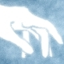
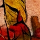
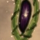
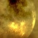
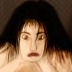
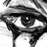
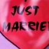

<object>
	<table class="tableau">
		<!-- 
		<tr class="bordures">
			<td><a href="#" onclick="MM_openBrWindow('images/creations/2d/2d_9.jpg','fenetre','width=675,height=770')"></a></td>
			<td>illustration pour le récit Lumière dans le Ciel de Stefan Michel sur Outre Monde. Gimp + InkScape.</td>
		</tr>
		-->
		<tr class="bordures">
			<td><a href="#" onclick="MM_openBrWindow('images/creations/2d/2d_7.jpg','fenetre','width=865,height=460')"></a></td>
			<td>fresque faite pour le challenge en équipe de Subposerforum. Fait avec Gimp.</td>
		</tr>
		<tr class="bordures">
			<td><a href="#" onclick="MM_openBrWindow('images/creations/2d/compo_1.jpg','fenetre','width=540,height=670')"></a></td>
			<td>illustration pour le récit de Jujube sur Outre Monde, Pluie de Cendres. DAZ Studio et Gimp.</td>
		</tr>
		<tr class="bordures">
			<td><a href="#" onclick="MM_openBrWindow('images/creations/2d/2d_5.jpg','fenetre','width=820,height=620')"></a></td>
			<td>illustration pour une carte virtuelle, fait avec Gimp et Inkscape.</td>
		</tr>
		<tr class="bordures">
			<td><a href="#" onclick="MM_openBrWindow('images/creations/2d/2d_4.jpg','fenetre','width=820,height=620')"></a></td>
			<td>illustration pour une carte virtuelle, fait avec Gimp.</td>
		</tr>	
		<tr class="bordures">
			<td><a href="#" onclick="MM_openBrWindow('images/creations/2d/2d_1.jpg','fenetre','width=492,height=728')"></a></td>
			<td>illustration pour le concours n°3 d'Its Art, fait avec Photoshop.</td>
		</tr>	
		<tr class="bordures">
			<td><a href="#" onclick="MM_openBrWindow('images/creations/2d/2d_2.jpg','fenetre','width=320,height=420')"></a></td>
			<td>image faite pour illustrer le tutoriel sur la peinture numérique, fait avec Photoshop.</td>
		</tr>	
		<tr class="bordures">
			<td><a href="#" onclick="MM_openBrWindow('images/creations/2d/2d_8.jpg','fenetre','width=660,height=500')"></a></td>
			<td>illustration pour la nouvelle de Aède, Mars et les Hommes, sur Outre Monde.</td>
		</tr>
		<tr class="bordures">
			<td><a href="#" onclick="MM_openBrWindow('images/creations/2d/2d_3.gif','fenetre','width=660,height=500')"></a></td>
			<td>animation faite avec Gimp.</td>
		</tr>		
		<tr class="bordures">
			<td><a href="#" onclick="MM_openBrWindow('images/creations/2d/2d_6.jpg','fenetre','width=448,height=667')"></a></td>
			<td>matte painting fait avec Photoshop, mon premier !</td>
		</tr>
	</table>
</object>
